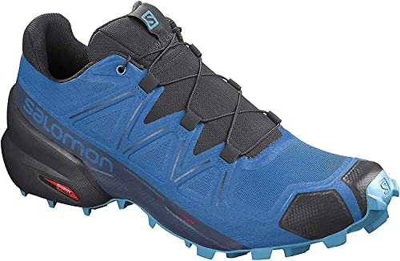

" VENTA DE PRODUCTO "
¡Hola!Soy Anthony, el producto que vendo son un par de zapatos deportivos.
¡Hola!Soy Anthony, el producto que vendo son un par de zapatos deportivos.

Los zapatos tiene un costo de $ 3,149 pesos. Este par de tenis azules para trail running están hechos de mallas con tejido GORE-TEX, esto los hace muy frescos, cómodos, le brindan una mayor durabilidad, resistencia y también los hace impermeables.
Tienen un ajuste quicklace que con solo ingresar tu pie, estarán cómoda y ajustados. La suela hecha de goma tiene un patrón grabado en el exterior y Espuma EVA, eso te ofrece tener una excelente tracción y pisadas muy suaves.
* Estilo L40925800
* Color Azul
* Recomendado para Correr
* Construcción superior de malla brinda ligereza, flexibilidad y mayor frescura.
* Tejido GORE-TEX® garantiza un rendimiento transpirable e impermeable.
* Suela de goma para mayor durabilidad y tracción sobre la superficie.
* Patrón exterior grabado incrementa la tracción.
* Espuma EVA para una amortiguación suave.